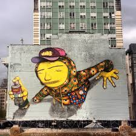
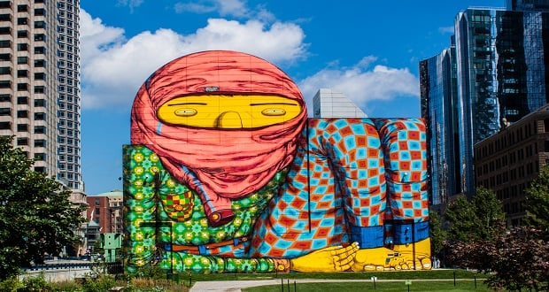
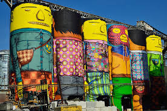
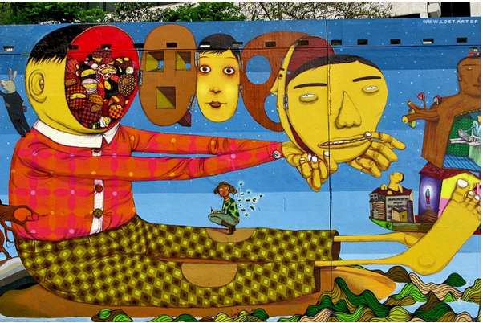
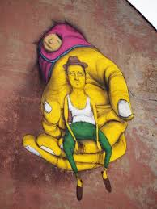
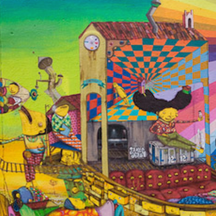
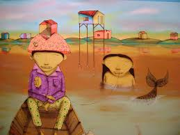
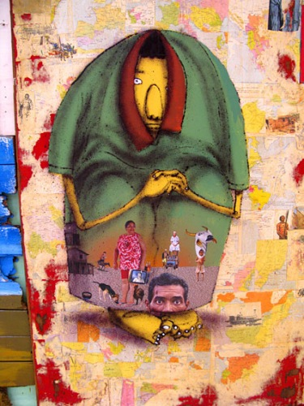
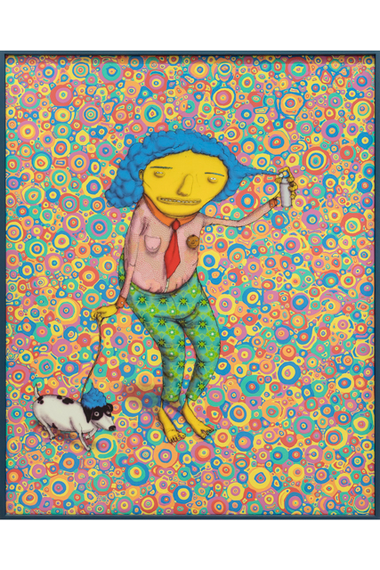
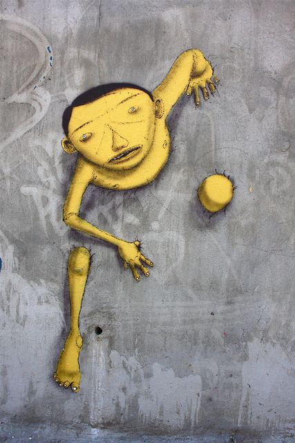

Os Gêmeos, Gustavo e Otávio Pandolfo, são uma das duplas mais famosas e influentes da arte urbana mundial. Nascidos em 1974 no bairro de Cambuci, em São Paulo, esses irmãos gêmeos idênticos transformaram a cena do grafite com sua estética vibrante e surreal. Seu estilo único, caracterizado por figuras alongadas, núcleos intensos e elementos fantásticos, ressoa com temas da cultura brasileira, críticas sociais e um imaginário lúdico e onírico. A história dos dois é uma verdadeira jornada, desde as ruas de São Paulo até o reconhecimento internacional.
1. Infância e Primeiros Contatos com a Arte
Desde cedo, Gustavo e Otávio desenvolveram um interesse pela arte. Seus pais sempre criaram a criatividade dos filhos, e a infância dos dois foi marcada por um ambiente familiar que valorizava o talento artístico. Com poucos recursos para adquirir brinquedos, eles improvisavam, criando seus próprios objetos de diversão com sucata, o que influenciava seu estilo inventivo e multifacetado. Desenhar se tornou uma paixão pelas duplas, e isso os levou a explorar ainda mais seu potencial artístico.
Na adolescência, na década de 1980, os irmãos começaram a se envolver com a cultura do hip-hop, que estava se tornando popular em São Paulo na época. Esse movimento foi essencial para o início de sua trajetória, pois conectou as meninas com o grafite. O grafite, que na época ainda era visto como uma atividade marginal e restrita, rapidamente se transformou em um meio para eles expressarem suas ideias e críticas à realidade brasileira.
2. O Estilo Único de Os Gêmeos
O estilo de Os Gêmeos é imediatamente reconhecível. Suas figuras de pele amarelada, roupas coloridas e proporções distorcidas refletem uma estética de sonho e fantasia. Inspirados por elementos da cultura popular brasileira, como o folclore e a música, e por experiências pessoais, os irmãos realizam uma linguagem visual que mistura referências locais com influências globais.
Uma característica marcante de seu trabalho é a representação de personagens melancólicos ou introspectivos, que expressam sentimentos profundos e complexos. Muitas vezes, esses personagens refletem questões sociais e políticas, como a desigualdade, a pobreza e a violência urbana. Os Gêmeos também incorporam o imaginário infantil e o subconsciente em suas obras, criando murais que parecem sair diretamente de um sonho. Essa fusão de fantasia e realidade faz com que suas obras tenham uma profundidade e uma complexidade que atraem pessoas de todas as idades e nacionalidades.
3. As Ruas de São Paulo como Galeria
Os Gêmeos iniciaram sua carreira artística pintando nas ruas de São Paulo, transformando muros, prédios e viadutos em verdadeiras galerias a céu aberto. As ruas da cidade, que em muitos aspectos refletem a realidade caótica e desigual do Brasil, se transformaram no ideal local para que os gêmeos expressassem suas mensagens. Suas pinturas logo ganharam notoriedade, o estilo vibrante e único dos irmãos chamou a atenção do público e da mídia.
Nos anos 1990, quando o grafite ainda era visto como vandalismo, Os Gêmeos enfrentaram resistência das autoridades e da sociedade, que ainda consideravam o grafite uma forma de marginalidade. No entanto, eles perseveraram, acreditando no poder da arte como forma de comunicação e transformação social. Suas obras começaram a ganhar uma dimensão poética e cultural que desafiava as convenções, e aos poucos eles se tornaram representantes do grafite brasileiro.
4. Reconhecimento Internacional e
A originalidade e a qualidade técnica dos trabalhos de Os Gêmeos chamaram a atenção do cenário artístico internacional. Em 1993, a dupla conheceu o grafiteiro americano Barry McGee, que estava em visita ao Brasil. McGee ficou conhecido com o talento das irmãs e os chamou para expor em uma galeria nos Estados Unidos. Esse convite marcou o início da carreira internacional dos irmãos. Ao longo dos anos 2000, Os Gêmeos participaram de exposições em renomadas galerias e museus ao redor do mundo, incluindo o Tate Modern, em Londres, e o Museum of Contemporary Art (MOCA), em Los Angeles. Eles também colaboraram com outros artistas de renome, como o britânico Banksy, expandindo ainda mais seu alcance e visibilidade. Suas obras passaram a ser apreciadas como arte contemporânea de alta qualidade, sendo reconhecidas pela crítica e pelo público global.
Em 2007, Os Gêmeos tiveram uma de suas maiores conquistas: foram convidados para pintar a fachada do Pavilhão da Bienal de São Paulo, transformando um dos principais símbolos da arte brasileira. Essa obra monumental foi uma das primeiras intervenções de grande escala realizadas pelas duplas e ajudou a consolidar seu status como artistas de referência.
5. Principais Obras e Projetos
A trajetória de Os Gêmeos é marcada por consideráveis projetos emblemáticos. Algumas de suas obras mais famosas incluem o mural "Gigantes do Norte", em Berlim, pintado em 2008, e o mural de grandes proporções na fachada de um prédio em Boston, nos Estados Unidos. Essas obras mostram a capacidade dos irmãos de adaptar seu estilo às particularidades culturais e arquitetônicas de cada lugar.
Outro projeto importante foi sua colaboração com a Bienal de São Paulo, onde realizar instalações interativas que permitiam ao público se envolver diretamente com a obra. Além disso, em 2014, eles foram convidados a pintar um avião da companhia aérea brasileira Gol, transformando-o em uma obra de arte voadora, que se tornou um ícone do grafite brasileiro. Os Gêmeos também realizaram exposições individuais e colaborativas em diversos museus e galerias. Em 2020, por exemplo, abriram uma grande exposição em São Paulo, intitulada "Segredos", que reuniu mais de 1.000 obras e atraiu um registro público. Esta exposição apresentou uma retrospectiva de sua carreira, incluindo obras inéditas e instalações que exploraram novas técnicas e estilos.
6. Legado e Influência
Os Gêmeos são considerados pioneiros do grafite brasileiro e têm uma influência profunda sobre gerações de artistas urbanos no Brasil e no exterior. Seu trabalho ajudou a legitimar o grafite como uma forma de arte respeitada e valorizada. Eles trouxeram à tona questões sociais e culturais do Brasil, apresentando a cultura popular brasileira para o mundo de uma forma única e poderosa.
O estilo de Os Gêmeos atraiu muitos outros grafiteiros para explorar sua própria cultura e cultura, incorporando elementos locais e globais. Sua contribuição vai além das paredes e das telas; eles representam a essência do grafite como uma arte de resistência e expressão pessoal. Seu legado é visível não apenas nas obras que saíram pelas ruas de São Paulo e nas galerias internacionais, mas também na transformação do grafite em uma forma de arte que transcende as fronteiras da marginalidade e do alcance social.
7. Os Gêmeos no Contexto da Arte Contemporânea
Hoje, Os Gêmeos são reconhecidos como ícones da arte urbana e contemporânea. Seu trabalho desafia as definições tradicionais da arte, ao mesmo tempo em que dialoga com movimentos artísticos mais amplos, como o surrealismo e a arte pop. Em suas obras, os irmãos exploram a relação entre o indivíduo e a sociedade, abordando temas complexos de maneira acessível e visualmente impactante.
Ao trazer a cultura brasileira para o centro da arte global, Os Gêmeos realizaram uma ponte entre o local e o universal, mostrando que o grafite pode ser tanto uma forma de arte popular quanto uma expressão sofisticada e profunda. Em suas mãos, o grafite se torna uma linguagem que pode ser compreendida por pessoas de todas as idades e culturas, abrindo caminhos para novas gerações de artistas urbanos.
Conclusão
A história de Os Gêmeos é uma jornada de persistência, criatividade e impacto cultural. Desde as ruas de São Paulo até as galerias mais prestigiadas do mundo, Gustavo e Otávio Pandolfo transformaram o grafite brasileiro e ajudaram a elevar a arte urbana a um novo patamar. Com seu estilo vibrante e sua capacidade de mesclar fantasia e realidade, Os Gêmeos continuam a inspirar milhões de pessoas, provando que a arte é uma poderosa forma de expressão e conexão humana.Hoje, eles são mais do que artistas; são embaixadores de uma cultura e de uma forma de ver o mundo, levando a essência do Brasil para todos os cantos do planeta.









